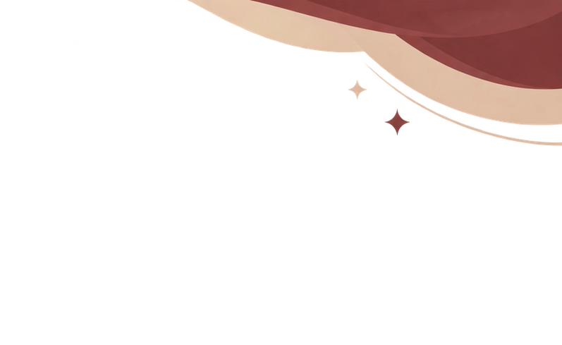

Beranda > Tentang Kami
Tentang Kami
Informasi lebih lanjut tentang UKM-O Catur & Bridge
FILOSOFI LOGO
- Logo Catur & Bridge Polije.
Menggambarkan perpaduan dua olahraga pikiran yang sama-sama menuntut strategi, ketelitian, dan sportivitas. - Papan catur hitam-putih yang disusun dalam bentuk belah ketupat.
melambangkan keseimbangan dan kemampuan melihat persoalan dari berbagai sudut. - Bidak benteng.
Melambangkan keteguhan dan ketegasan dalam mengambil keputusan. - Empat simbol kartu bridge (sekop, wajik, hati, dan keriting).
Melambangkan kerja sama tim, komunikasi, dan kemampuan membaca situasi. - Lambang Polije di pusat logo.
Menegaskan bahwa seluruh prestasi dan kegiatan unit ini berpijak pada identitas dan nilai-nilai kampus.
Arti dari semua logo ini mencerminkan semangat berpikir strategis, bermain jujur, dan berkembang bersama.

VISI& MISI
👁 VISI
Menjadi UKM yang unggul dalam prestasi, berkarakter,
dan berdaya saing di bidang catur dan bridge.
𖣠 MISI
- ♞Mengembangkan kemampuan anggota.
- ♟Meningkatkan prestasi di tingkat regional maupun nasional.
- ♛Menjalin hubungan baik antar anggota dan komunitas.
SEJARAH UKM-O CATUR & BRIDGE
UKM Catur pada awalnya merupakan organisasi yang berada di bawah naungan UKM Olahraga dan menjadi wadah bagi mahasiswa yang memiliki minat terhadap olahraga catur. Namun, seiring berjalannya waktu, jumlah peminat semakin berkurang sehingga aktivitas organisasi mulai terbatas. Untuk menjaga keberlangsungan organisasi dan meningkatkan efektivitas pembinaan, UKM Catur kemudian bergabung dengan UKM Bridge dalam satu wadah organisasi. Meskipun berada dalam satu naungan, keduanya tetap menjalankan kegiatan sesuai bidang masing-masing dengan didampingi oleh dua pembina. Hingga saat ini, UKM Catur tetap menjadi wadah bagi mahasiswa untuk mengembangkan kemampuan berpikir strategis, konsentrasi, dan sportivitas.